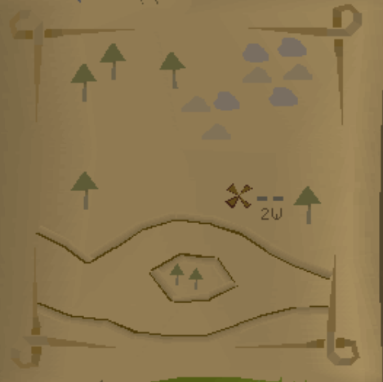
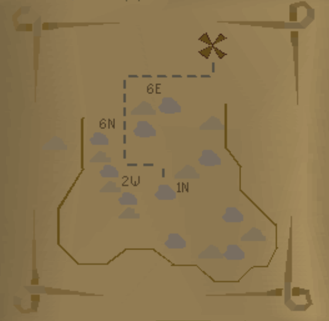
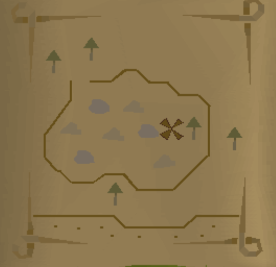
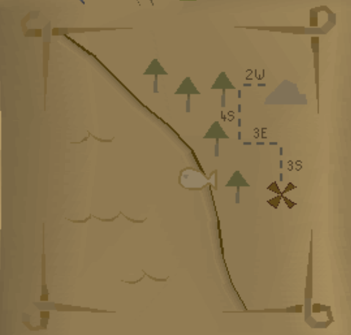
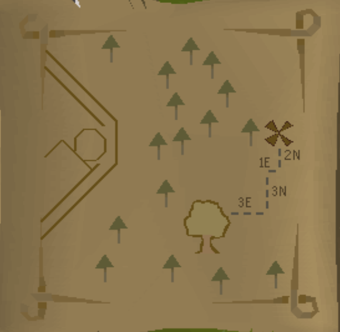
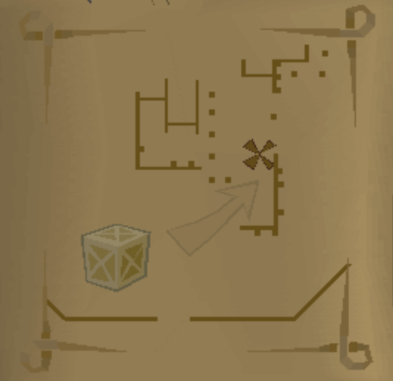

Treasure Trails Maps & Puzzles Guide
Maps
Sometimes you might get a clue scroll, and when you open it up to read it, all you see is a map. Your task is now to find out where that place is, and then, like the pirates always do, take the steps shown on your map, and dig where X marks the spot ;) To dig, you'll need your trusty spade. Here's a list of the different maps:
| Easy Clues | |
|---|---|
 |
Champions Guild Map West of Champions Guild |
 |
Varrock Mine Map Dig at the fence at the south-east Varrock mine |
 |
Falador Useless Rock Area Map Fenced area north-east of Falador, south-west of Barbarian Village; full of useless rocks |
| Medium Clues | |
|---|---|
 |
Draynor Fish Spot Map South of Draynor Village's bank |
 |
Observatory Map West of Tree Gnome Village |
| Hard Clues | |
|---|---|
 |
Varrock Lumberyard Map Lumberyard, north-east of Varrock |
Puzzles
| Castle Puzzle Box Solver | |
|---|---|
|
Moves to solve: 0
|